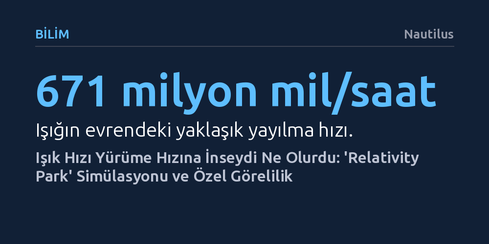

BILIM · Nautilus · 2026-10-16
Dmitry Brant'in geliştirdiği 'Relativity Park' simülatörü, ışık hızını saatte yaklaşık 5 kilometreye düşürerek Einstein'ın özel görelilik teorisindeki uzay ve zaman bükülmelerini görünür kılıyor. Kullanıcılar yürüme hızında ilerlerken ışığın maviye kaymasını, nesnelerin daralmasını ve zamanın yavaşlamasını doğrudan deneyimleyebiliyor.
Gündelik hayatta algılanamayacak kadar yüksek olan ışık hızını insan ölçeğine indirerek Einstein'ın soyut görelilik denklemlerinin çevremizi ve zaman algımızı nasıl değiştireceğini somutlaştırıyor.

Işık evrende saatte yaklaşık 671 milyon mil gibi akılalmaz bir süratle yol alır. Bu olağanüstü hız nedeniyle günlük hayatımızda ışığı anlık kabul ederiz ve evrenin temel kurallarından biri olan görelilik etkilerini hiçbir zaman doğrudan gözlemleyemeyiz. Ancak geliştirici Dmitry Brant tarafından hazırlanan "Relativity Park" adlı yeni bir web projesi, bu temel fizik kuralını radikal bir şekilde değiştirerek "Işık hızı çok daha yavaş olsaydı evren nasıl görünürdü?" sorusunu somut bir deneyime dönüştürüyor.
Simülatörde ışık hızı saatte yalnızca 3,11 mile, yani tempolu bir yürüyüş hızına sabitlenmiş durumda. Normal koşullarda yalnızca karadeliklerin etrafında veya parçacık hızlandırıcılarda karşımıza çıkan aşırı fiziksel durumlar, bu simülasyon sayesinde klavyemizdeki yön tuşlarıyla gezinebildiğimiz bir parkın içinde, doğrudan gözümüzün önünde cereyan ediyor.
Albert Einstein’ın 1905 yılında yayımladığı özel görelilik teorisi, fiziğin en şaşırtıcı ilkelerinden birine dayanır: Işığın hızı, gözlemcinin hareketinden tamamen bağımsız olarak daima sabittir. Hareketsiz duruyor olsanız da ışık hızına yakın bir hızla yol alsanız da ışık sizden her zaman aynı hızla uzaklaşır. Kendi hızınız değiştiğinde ışık hızı değişmediğine göre, evren bu durumu dengelemek için başka bir şeyden ödün vermek zorundadır.
Bu ödün, doğrudan uzayın ve zamanın kendisinin bükülmesidir. Hızlandıkça mesafeler kısalır ve zaman yavaşlar. Günlük hayatımızda ya da en hızlı roketlerimizde bile ışık hızının kıyısından dahi geçemediğimiz için bu sapmalar hissedilmez; Uluslararası Uzay İstasyonu'ndaki astronotlar Dünya'daki insanlara göre saniyenin çok küçük bir kesri kadar daha yavaş yaşlanırlar. Relativity Park'ta ise ışık hızı yürüme seviyesine çekildiği için bu bükülmeler hemen fark edilir hale gelir.
Simülasyonda ileri gitmek için tuşa bastığınızda ve yavaşça ışık hızına yaklaştığınızda, çevrenizdeki manzara çarpıcı biçimde başkalaşır. İlk olarak "göreli sapma" adı verilen etki devreye girer: Önünüzdeki bütün nesneler sanki geniş açılı bir merceğin merkezine çekiliyormuş gibi görüş alanınızın ortasında toplanır ve sıkışır. Aynı zamanda ilerlediğiniz yöndeki ışık dalgaları sıkışarak maviye kayar ve fotonlar önünüzde yığıldığı için görüntü belirgin biçimde parlaklaşır.
Farenizi çevirip arkanıza baktığınızda ise bu durumun tam zıddı yaşanır. Seyahat yönünüzün gerisinde kalan manzara esneyip genişler, ışık dalga boyu uzadığı için renkler kırmızıya döner ve ışık seyreldiği için çevre kararır. Bazen karanlık bir bölgedeki bir nesnenin beklenmedik şekilde parladığını görürsünüz; bu da o nesnenin kendi hareketinin ışık hızına kıyasla oluşturduğu göreli etkiden kaynaklanır.
Simülatör yalnızca optik yanılsamaları değil, zamanın göreli akışını da gözler önüne serer. Ekranın sağ alt köşesinde bulunan kronometre, sizin kendi deneyimlediğiniz zaman ile çevrenizdeki dünyanın zamanını yan yana gösterir. Yürüyüş hızınızı artırıp ışık hızına yaklaştıkça, sizin saatinizin dış dünyaya kıyasla belirgin şekilde yavaşladığını izleyebilirsiniz.
Parkın içinde yanıp sönen sokak lambaları da bu prensibin bir diğer kanıtıdır. Lambaların yanıp sönme sıklığı ve yaydığı ışığın rengi aslında sabittir; ancak siz hızlandıkça veya yavaşladıkça, sizin bakış açınızdan lambaların yanma aralıkları ve renkleri kökten değişir. Dmitry Brant'in geliştirdiği bu etkileşimli model, modern fiziğin en karmaşık matematiksel çıkarımlarını dokunulabilir bir sezgiye çevirmeyi başarıyor.